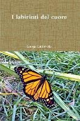

4:45 · 2 OPERE
I labirinti del cuore. Capitolo I.
Il filo del discorso
Il primo capitolo di I labirinti del cuore immagina una distanza dai confini ordinari del quotidiano dalla quale osservare la vita e riconoscerne le forze fondamentali: passione, gioia, paura e dolore. La frase sul cuore che serve alla vita viene esplorata attraverso significati diversi, contrapponendo la riduzione materiale all’esperienza del sentire. Un richiamo a Matteo introduce il cuore come centro dell’esistenza, mentre le opposizioni vengono lette come segni di un’interezza da ricomporre. La conclusione lega cuore e anima e difende una dimensione dell’amore che non si lascia pesare, contare o spiegare soltanto mediante la ragione.
I libri nel discorso

I labirinti del cuore
Copertina: Lulu.com · edizione commerciale ISBN 9781105055430
Immagine associata all’ISBN 9781105055430 nei cataloghi commerciali. Le schede riportano date discordanti 2011/2012: l’anno non viene convalidato. Non viene equiparata all’indicazione editoriale pronunciata nel video. La precedente qualificazione bibliografica resta invariata.
Titolo e sottotitolo pronunciati a 1,58 secondi, seguiti da un’indicazione editoriale fonetica, dall’anno 2011 e dall’annuncio del primo capitolo.
Passaggio 0:01 ↗ · Fonti e libro ↗
Bibbia
Identificazione probabile
Copertina: San Paolo, 2014 · Nuova Versione dai Testi Antichi · edizione di riferimento
A 135,18 secondi viene nominato Matteo e richiamato il passo che collega il tesoro al cuore.
Passaggio 2:15 ↗ · Fonti e libro ↗